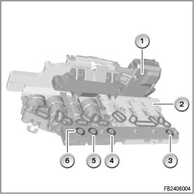
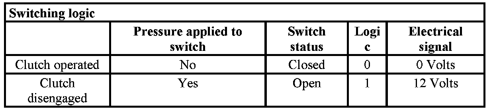
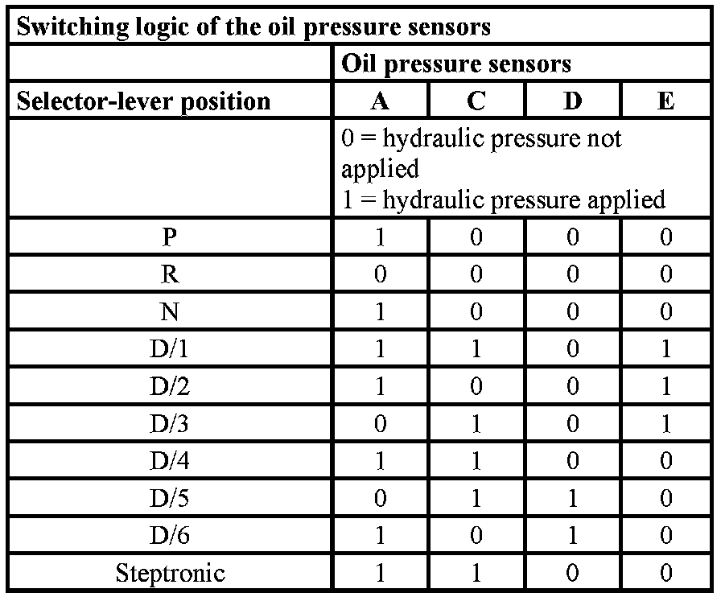

Oil-Pressure Sensor
Oil pressure sensors
The oil pressure sensors detect the shift state of the transmission and send a signal to the EGS control module to confirm this status.
Brief description of components
The oil pressure sensors are pressure switches that register any applied hydraulic pressure. The oil pressure sensors are installed in the valve block of the hydraulic unit (hydraulic selector unit).

Index Explanation
1 Electronic module
2 Hydraulic unit
3 Oil pressure sensor E
4 Oil pressure sensor C
5 Oil pressure sensor A
6 Oil pressure sensor D
System functions
The following system function is described:
Switching logic of the oil pressure sensors
When no hydraulic pressure is applied, the oil pressure sensors are closed, i.e., current flows through the sensors.
When hydraulic pressure is applied, the circuit is interrupted by the oil pressure sensors and no current flows. This results in different pressure states at the oil pressure sensors, depending on the shift mode of the transmission. The electrical signals are sent to the EGS control module.


Notes for Service department
Diagnosis instructions
Relevant faults in the oil pressure sensors
The following faults are treated in the test module:
- 5659 oil pressure sensor A: value too low
- 565A oil pressure sensor A: value too high
- 565B oil pressure sensor B: value too low (saved)
- 565C oil pressure sensor B: value too high (saved)
- 565D oil pressure sensor C: value too low
- 565E oil pressure sensor C: value too high
- 565F oil pressure sensor D: value too low
- 5660 oil pressure sensor D: value too high
- 5661 oil pressure sensor E: value too low
- 5662 oil pressure sensor E: value too high
No liability can be accepted for printing or other faults. Subject to changes of a technical nature